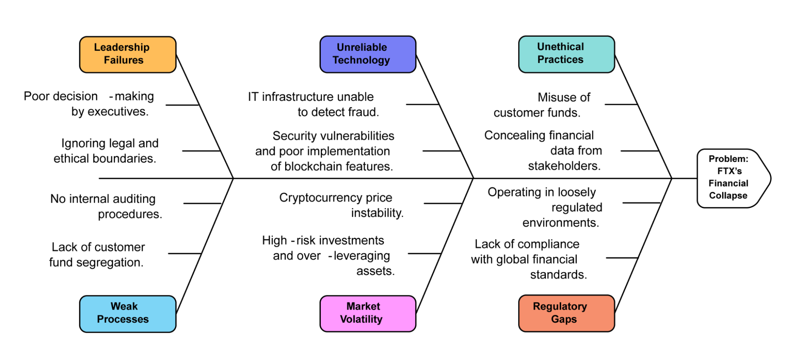

Introduction
FTX Trading Ltd., also known as FTX, was once one of the biggest platforms for Bitcoin exchanges. Its failure serves as a warning about poor leadership, uncontrolled risks, and moral failings. As a project management student, I decided to investigate this incident using the Ishikawa/Fishbone Diagram to pinpoint and comprehend the fundamental reasons behind such a major failure. This tool helps break down complex issues into clear categories, making it easier to identify what went wrong and how it could have been avoided. The FTX story provides valuable lessons on leadership, governance, and risk management—essential components for any project's success.
Analyzing the Collapse

The reasons behind FTX's financial collapse have been detailed using an Ishikawa/Fishbone diagram, which is divided into several categories: negative and unethical actions, volatile markets, inadequate processes, leadership failures, and regulatory errors. Weak leadership was a major contributing factor. Executives like Sam Bankman-Fried's decisions led to the misuse of client assets and ignored ethical and legal requirements. The company was not properly audited, which worsened its financial problems, and it did not segregate its funds and client money.
FTX's IT infrastructure was unable to detect or effectively manage fraud and risks, along with unreliable technology problems. The issue was not with blockchain technology itself, but with centralized control, lack of internal controls, and absence of proper auditing mechanisms. In addition, market volatility—particularly in cryptocurrency prices—combined with high-risk investments contributed to significant financial losses.
Ethical lapses were evident in the misuse of customer funds and the concealment of financial data from stakeholders. Operating in loosely regulated environments allowed the company to bypass critical checks, highlighting regulatory gaps. Insights from Kathy Schwalbe's Information Technology Project Management emphasize that tools like the Fishbone diagram can help identify root causes systematically.
The documentary Ruin: Money, Ego, and Deception at FTX powerfully illustrates the findings, highlighting how leadership and technical flaws fueled the collapse. The documentary provides a comprehensive view of the underlying issues. The case highlights why governance, transparency, and risk management are essential to any financial institution.
Conclusion
The Ishikawa/Fishbone Diagram is a great practical tool for analyzing the root causes of failures like the collapse of FTX. It makes it easier to identify and solve specific problems because it allows you to break down complex issues into smaller, manageable categories like leadership, technology, and processes. However, one limitation of the Ishikawa/Fishbone Diagram is that it depends on having accurate and well-researched information. If the root causes are not correctly identified, the analysis might miss key factors or give a wrong impression.
Through this study, I've realized how crucial transparency, strong leadership, and reliable systems are for successful management. The FTX collapse showed that neglecting these aspects can have serious consequences. As a project management student, I now understand how tools like the Fishbone Diagram can help break down complex problems and find solutions across various industries.
In the future, lessons from FTX's downfall highlight the importance of ethical practices and better governance in any organization. Managing risks effectively and holding people accountable will ensure long-term success. This case has taught me the value of using structured tools for analyzing issues and improving decision-making in challenging situations.
FTX did not fail because of technology—it failed because of people, processes, and lack of accountability.
Update (26 March 2026)
Since this article was originally written in 2023, significant developments have taken place regarding FTX and its former CEO, Sam Bankman-Fried. In late 2023, he was found guilty by a U.S. federal court on multiple charges, including fraud and conspiracy, marking one of the most high-profile legal outcomes in the cryptocurrency industry.
These legal findings confirmed many of the concerns discussed in this analysis, particularly around the misuse of customer funds, lack of transparency, and weak governance. The case has since become a landmark example in discussions about financial accountability and ethical leadership.
From an industry perspective, the collapse of FTX has accelerated global regulatory efforts. Governments and financial authorities are now placing greater emphasis on cryptocurrency exchange oversight, investor protection, and compliance requirements. This shift highlights the importance of structured risk management and regulatory alignment in modern financial systems.
Reflecting on this case in 2026, the lessons remain highly relevant—not only in cryptocurrency but across all technology-driven organizations. Strong governance, ethical decision-making, proper auditing, and risk control are no longer optional; they are essential for sustainability and trust.
Sources
- Information Technology Project Management (9th Edition) by Kathy Schwalbe - "Develop a strong understanding of IT project management as you learn to apply today's most effective project management tools and techniques."
- Ruin: Money, Ego and Deception at FTX (TV Special, 2023) Directed by Shern Sharma - "A feature documentary about Sam Bankman-Fried and the stunning collapse of FTX, his cryptocurrency exchange."